시스템 개요
플랫폼의 핵심 기능과 구성을 소개합니다
USFK Procurement Intelligence Platform은 미국 정부 공식 조달 사이트 SAM.gov 및 USAspending.gov API와 연동하여 주한미군(USFK) 관련 입찰 공고를 자동으로 수집하고 분석하는 웹 서비스입니다.
자동 수집
SAM.gov의 입찰 공고를 주기적으로 스캔하고 수집합니다. 사전공지, 신규, 변경, 마감 임박 공고를 상태별로 관리합니다.
분석 인사이트
과거 낙찰 데이터를 분석하여 경쟁사 동향, 낙찰 금액, 발주 패턴 등을 파악하고 유망 분야를 도출합니다.
AI 분석
AI 기반의 입찰 분석, 경쟁사 분석, 요약 기능으로 빠르고 정확한 의사결정을 지원합니다.
맞춤 알림
설정한 필터 조건에 부합하는 공고 발생 시 이메일로 실시간 알림을 전송합니다.
로그인
시스템 접속 및 인증
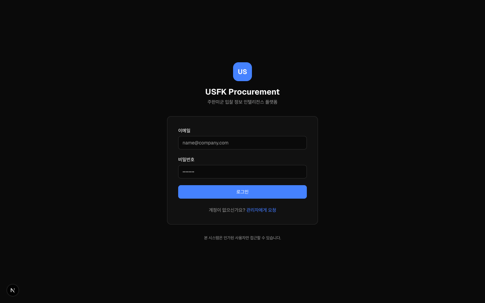
접속 방법
로그인 페이지 접속
웹 브라우저에서 시스템 URL에 접속하면 로그인 페이지가 표시됩니다. 미인증 사용자는 자동으로 로그인 페이지로 이동합니다.
인증 정보 입력
관리자에게 부여받은 이메일과 비밀번호를 입력합니다.
대시보드 진입
인증 성공 시 대시보드 메인 화면으로 이동합니다. 좌측 사이드바를 통해 각 기능에 접근할 수 있습니다.
대시보드
실시간 입찰 현황을 한눈에 파악합니다
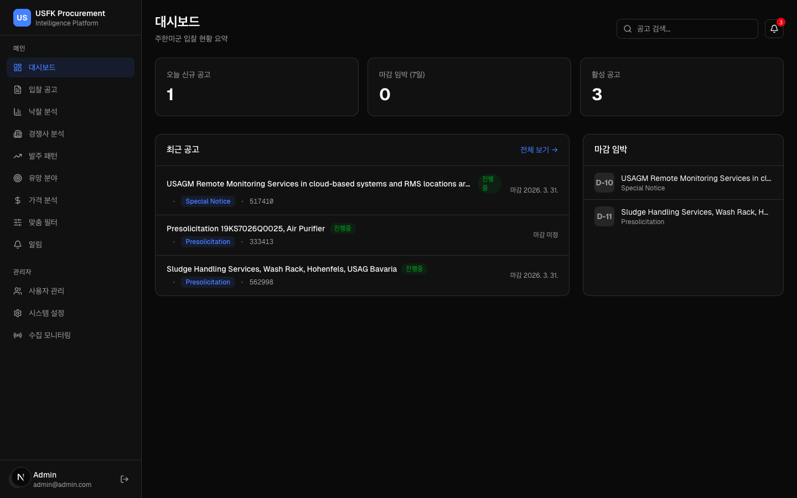
주요 통계 카드
대시보드 상단에 3개의 핵심 지표가 표시됩니다.
오늘의 신규 공고
당일 새로 등록된 입찰 공고 수를 표시합니다.
마감 임박
7일 이내 마감되는 공고 수를 표시합니다.
총 활성 공고
현재 진행 중인 전체 공고 수를 표시합니다.
마감 임박 공고
우측 사이드 영역에 마감이 가까운 공고 목록이 표시됩니다. D-day 카운트다운이 색상으로 구분됩니다.
최근 공고 목록
가장 최근에 등록된 5개 공고가 카드 형식으로 표시됩니다. 각 카드에는 공고 제목, 담당 부서, 공고 유형, NAICS 코드, 마감일이 포함되며, 클릭하면 상세 페이지로 이동합니다.
입찰 공고
SAM.gov에서 수집된 전체 공고를 검색하고 관리합니다
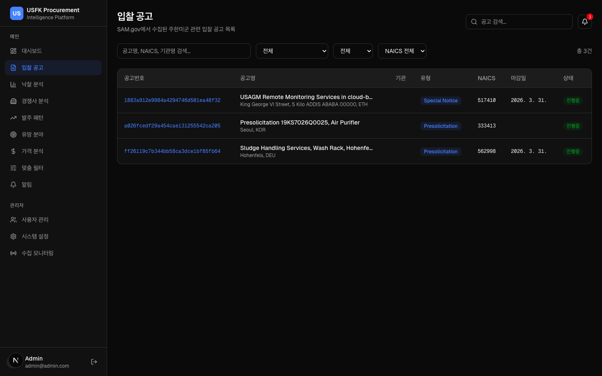
공고 목록 조회
모든 수집된 입찰 공고를 테이블 형식으로 조회할 수 있습니다. 한 페이지에 20건씩 표시되며 페이지네이션을 통해 탐색합니다.
검색 및 필터링
상단의 검색 영역에서 다양한 조건으로 공고를 필터링할 수 있습니다.
| 필터 항목 | 설명 | 예시 |
|---|---|---|
| 키워드 검색 | 공고 제목, ID 등 텍스트 검색 | maintenance, construction |
| 공고 유형 | Presolicitation, Solicitation 등 | 드롭다운 선택 |
| 상태 | Active, Closed 등 공고 상태 | 드롭다운 선택 |
| NAICS 코드 | 산업 분류 코드 | 236220, 561210 |
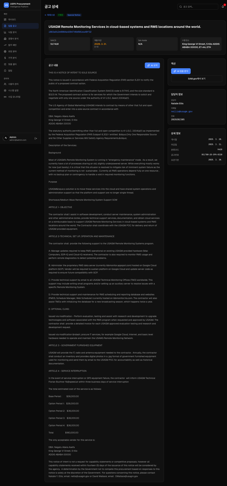
공고 상세 보기
목록에서 공고를 클릭하면 상세 페이지로 이동합니다.
- 기본 정보 — Notice ID, 발주 기관, 담당 부서
- 핵심 지표 — NAICS 코드, 제출 마감일(D-day), Set-Aside 유형, 수행 장소
- 공고 상세 설명 — 전문 내용 및 요구사항
- 연락처 — 담당자 이름, 이메일, 전화번호
- 관련 링크 — 첨부 문서, SAM.gov 원본 링크
AI 분석 기능 AI
공고 상세 페이지에서 AI 기반의 분석 기능을 활용할 수 있습니다.
- AI 요약 — 긴 공고 설명을 핵심 사항 중심으로 요약합니다
- AI 입찰 분석 — 해당 공고의 입찰 전략, 주의사항, 경쟁 강도 등을 분석합니다
엑셀 다운로드
검색 결과를 엑셀 파일(XLSX)로 다운로드할 수 있습니다. 보고서 작성이나 오프라인 분석에 활용하세요.
낙찰 분석
과거 계약 체결 데이터를 분석합니다
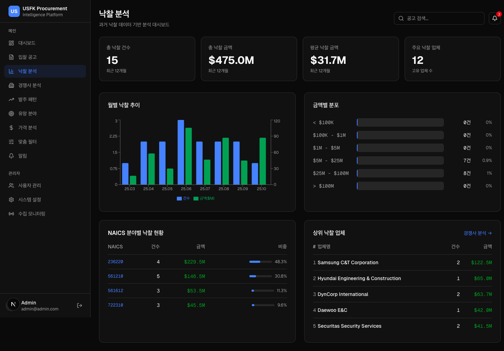
요약 통계
최근 12개월 기준의 핵심 지표를 4개 카드로 확인합니다.
총 낙찰 건수
기간 내 체결된 전체 계약 수
총 낙찰 금액
전체 계약 금액의 합계 (USD)
평균 낙찰 금액
건당 평균 계약 금액
고유 낙찰자 수
계약을 수주한 기업 수
분석 차트
- 월별 추이 차트 — 낙찰 건수와 금액의 월별 변화를 라인 차트로 표시
- 금액 분포도 — 계약 규모별 분포를 바 차트로 시각화
NAICS 분석 테이블
산업 분류 코드(NAICS)별 낙찰 현황을 확인합니다. 코드, 건수, 금액, 비중이 시각적 프로그레스 바와 함께 표시됩니다.
상위 수주 기업
낙찰 금액 기준 Top 5 기업이 순위표로 표시됩니다. 경쟁사 분석 페이지로 바로 이동할 수 있습니다.
경쟁사 분석
주요 경쟁 기업의 수주 현황과 시장 동향을 파악합니다
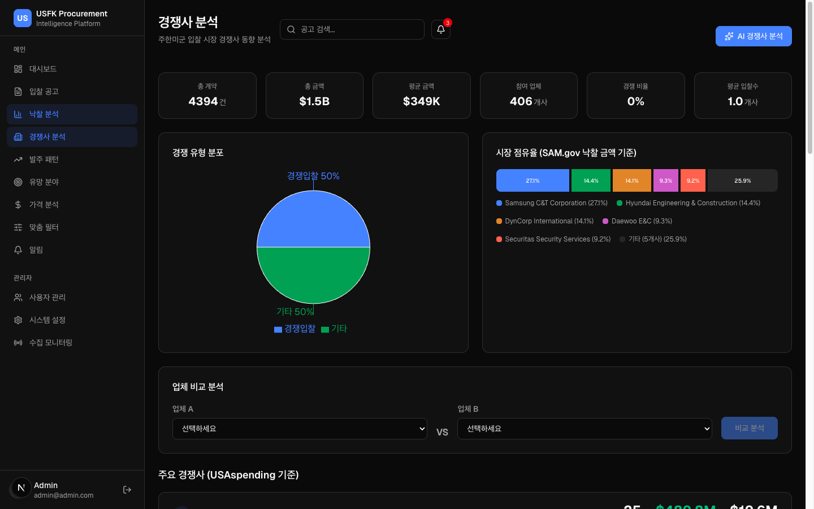
시장 개요
상단에 6개 지표 카드가 표시됩니다.
| 지표 | 설명 |
|---|---|
| 총 계약 건수 | 분석 기간 내 전체 계약 수 |
| 총 계약 금액 | 전체 계약 금액 합계 |
| 평균 계약 금액 | 건당 평균 금액 |
| 고유 업체 수 | 참여 기업 총 수 |
| 경쟁 비율 | 경쟁 입찰 비율 (%) |
| 평균 입찰자 수 | 공고당 평균 입찰 참여 기업 수 |
시각화 차트
- 경쟁 유형 분포 — Full & Open, Sole Source 등 입찰 유형별 비율
- 시장 점유율 — 상위 5개 기업의 점유율을 수평 누적 바 차트로 표시
업체별 상세 카드
각 경쟁 기업에 대한 상세 분석 카드가 제공됩니다.
- 기업명, UEI(고유 식별자), 순위, 수주 건수, 총 금액, 평균 금액
- 해당 기업이 수주한 NAICS 코드 분포 (태그 형식)
- 최근 수주 내역 목록
업체 비교 비교
USAspending 데이터가 연동된 경우, 여러 업체를 선택하여 비교 분석할 수 있습니다. 계약 규모, NAICS 분포, 수주 추이 등을 병렬로 비교합니다.
AI 경쟁사 분석 AI
AI가 해당 시장의 경쟁 구도를 분석하고, 주요 NAICS 분야별 진입 전략과 경쟁 강도를 제시합니다.
데이터 분석
발주 패턴, 유망 분야, 가격을 심층 분석합니다
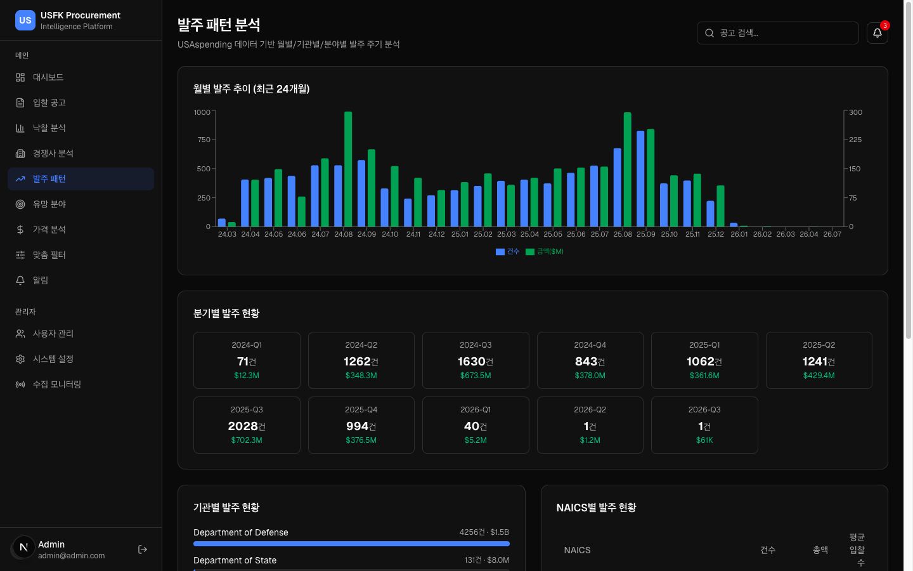
발주 패턴 분석
과거 24개월 데이터를 기반으로 발주 패턴을 분석합니다.
- 월별 발주 추이 — 건수와 금액의 시계열 변화
- 분기별 패턴 — Q1~Q4 분기별 발주 건수 및 금액 비교
- 기관별 발주 분석 — 주요 발주 기관의 비중 및 금액 수평 바 차트
- NAICS별 발주 현황 — 산업 코드별 건수, 총액, 평균 입찰자 수
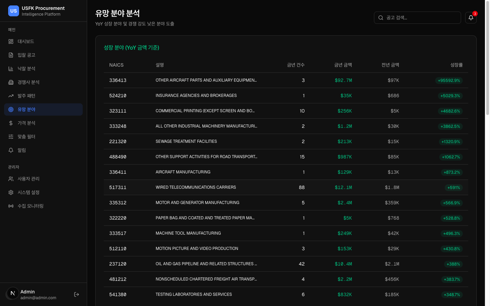
유망 분야 분석
전년 대비 성장률을 기반으로 유망 분야와 경쟁 강도를 분석합니다.
- 성장 분야 — 전년 대비 발주 금액이 증가한 NAICS 분야 (성장률 표시)
- 저경쟁 분야 — 입찰자 수가 적고 수의계약(Sole Source) 비율이 높은 분야
- 축소 분야 — 전년 대비 감소 추세의 분야 (감소율 표시)
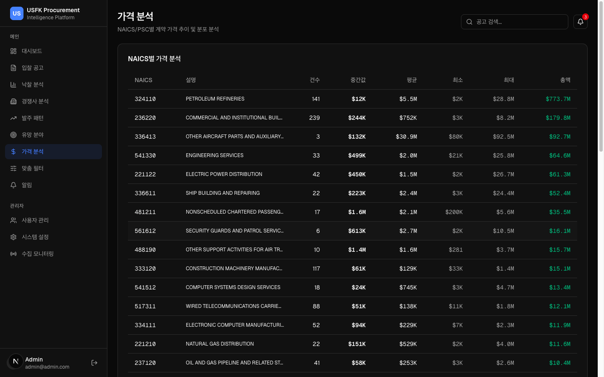
가격 분석
NAICS 코드 및 PSC(Product Service Code)별 계약 가격 통계를 분석합니다.
| 분석 항목 | 표시 지표 |
|---|---|
| NAICS 가격 분석 | 건수, 중앙값, 평균, 최소, 최대, 총액 |
| PSC 가격 분석 | 건수, 중앙값, 평균, 가격 범위 시각화 |
맞춤 필터
관심 조건을 설정하여 자동으로 공고를 선별합니다
필터 관리
사용자별 맞춤 필터를 생성하고 관리합니다. 필터 조건에 부합하는 공고가 발생하면 알림이 전송됩니다.
필터 생성
새 필터 추가 버튼을 클릭하고, 필터 이름과 조건을 설정합니다. 키워드, NAICS 코드, 공고 유형 등 다양한 조건을 조합할 수 있습니다.
필터 수정
기존 필터의 조건을 수정할 수 있습니다. 필터 목록에서 해당 필터의 편집 버튼을 클릭합니다.
필터 삭제
더 이상 필요 없는 필터를 삭제합니다. 삭제된 필터의 알림도 함께 중단됩니다.
알림 설정
알림 채널과 수신 조건을 관리합니다
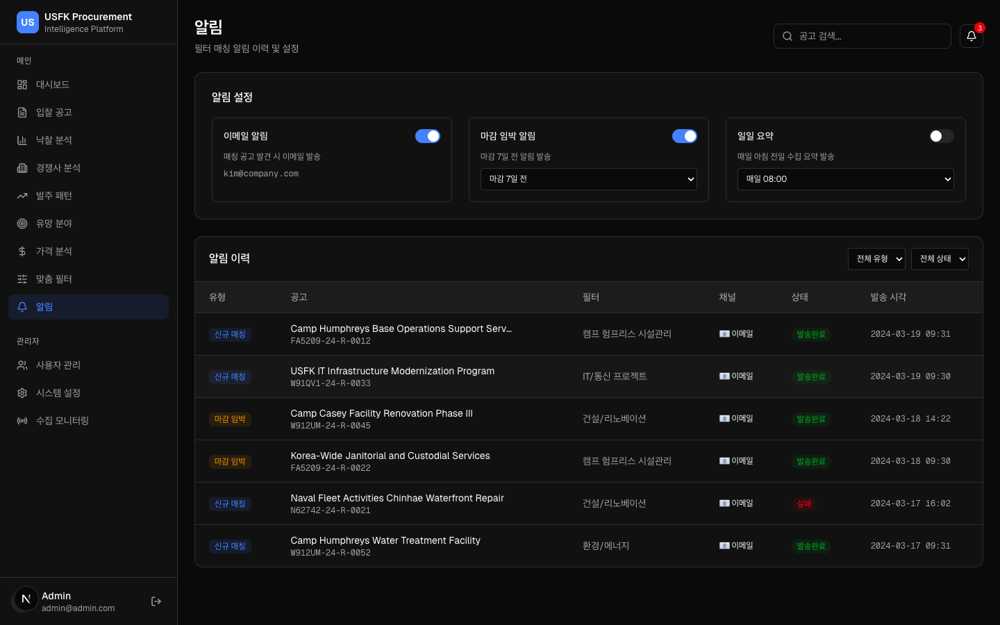
알림 유형
| 유형 | 설명 | 기본 상태 |
|---|---|---|
| 이메일 알림 | 필터 조건에 부합하는 공고 발생 시 이메일 발송 | 활성 |
| 마감 경고 | 관심 공고의 마감일 임박 시 경고 알림 (7일/3일/14일 전 선택) | 활성 |
| 일일 요약 | 매일 08:00에 전일 신규 공고를 요약하여 발송 | 비활성 |
알림 이력
발송된 알림의 이력을 조회합니다. 유형별, 상태별 필터링이 가능합니다.
관리자 기능
시스템 관리 및 운영 기능 (관리자 권한 필요)
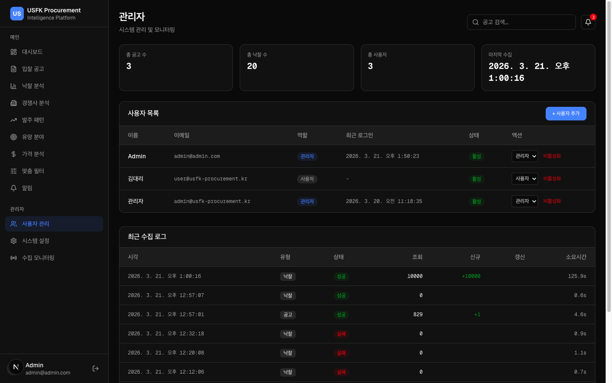
사용자 관리 Admin
- 시스템 통계 — 총 공고 수, 총 낙찰 수, 총 사용자 수, 마지막 동기화 시간
- 사용자 목록 — 이름, 이메일, 역할(Admin/User), 마지막 로그인, 상태 확인
- 사용자 추가 — 새 사용자 계정 생성 (이름, 이메일, 역할 지정)
- 사용자 작업 — 역할 변경, 계정 비활성화/활성화, 계정 삭제
시스템 설정 Admin
시스템 전체 설정을 확인합니다. 현재 읽기 전용이며, 변경은 환경 변수 수정 및 재배포가 필요합니다.
| 설정 항목 | 내용 |
|---|---|
| SAM.gov API 상태 | API 키 구성 여부 및 연결 상태 |
| 공고 수집 주기 | 매시 정각 (Hourly) |
| 낙찰 수집 주기 | 매일 06:00 UTC |
| 시스템 버전 | 현재 시스템 버전 정보 |
| 실행 환경 | Development / Production |
수집 모니터링 Admin
데이터 수집(동기화) 상태를 모니터링하고 수동 실행할 수 있습니다.
- 수동 동기화 — SAM.gov 공고 또는 USAspending 낙찰 데이터를 즉시 동기화
- 동기화 로그 — 최근 50건의 동기화 이력 (유형, 상태, 건수, 소요 시간, 오류 메시지)
자주 묻는 질문
사용 중 궁금한 점을 확인하세요
데이터는 얼마나 자주 업데이트되나요?
입찰 공고는 매시간, 낙찰 데이터는 매일 06:00 UTC에 자동으로 수집됩니다. 관리자가 수동으로 즉시 동기화를 실행할 수도 있습니다.
SAM.gov에서 직접 확인할 수 있나요?
네, 공고 상세 페이지에서 "SAM.gov에서 보기" 버튼을 클릭하면 원본 공고 페이지로 바로 이동합니다.
엑셀 다운로드는 어떻게 하나요?
입찰 공고 및 낙찰 분석 페이지에서 내보내기(Export) 기능을 사용하면 현재 조회된 데이터를 엑셀(XLSX) 파일로 다운로드할 수 있습니다.
AI 분석은 어떤 정보를 제공하나요?
AI 분석은 공고의 핵심 내용 요약, 입찰 전략 제안, 경쟁 강도 평가, 시장 진입 전략 등을 제공합니다. 개별 공고 분석과 전체 시장 경쟁사 분석 두 가지 모드를 지원합니다.
NAICS 코드란 무엇인가요?
NAICS(North American Industry Classification System)는 북미 산업 분류 체계로, 미국 정부가 입찰 공고를 분류할 때 사용합니다. 예: 236220 (상업/기관 건축), 561210 (시설 관리 서비스)
모바일에서도 사용 가능한가요?
네, 반응형 디자인으로 PC와 모바일 모두에서 사용 가능합니다. 모바일에서는 좌측 상단의 햄버거 메뉴(☰)를 탭하여 네비게이션을 열 수 있습니다.
USAspending 데이터는 왜 필요한가요?
SAM.gov는 현재 공고 정보를, USAspending.gov는 과거 계약 체결(낙찰) 데이터를 제공합니다. 두 데이터를 결합하면 경쟁사 분석, 가격 분석, 발주 패턴 등 심층 분석이 가능합니다.
화면 구성
전체 네비게이션 구조
| 메뉴 | 기능 요약 |
|---|---|
| 📊 대시보드 | 실시간 현황 요약, 신규/마감 임박 공고 |
| 📄 입찰 공고 | 전체 공고 검색, 필터링, 상세 조회, AI 분석 |
| 🏆 낙찰 분석 | 계약 통계, 월별 추이, NAICS 분석, 상위 기업 |
| 🏢 경쟁사 분석 | 시장 개요, 점유율, 업체별 상세, AI 분석 |
| 📈 발주 패턴 | 월별/분기별 추이, 기관별/NAICS별 패턴 |
| 🎯 유망 분야 | 성장/저경쟁/축소 분야 분석 |
| 💰 가격 분석 | NAICS/PSC별 가격 통계 |
| ⚙ 맞춤 필터 | 알림 조건 설정 및 관리 |
| 🔔 알림 | 알림 설정 및 발송 이력 |
| 👥 사용자 관리 Admin | 계정 추가/수정/삭제, 역할 관리 |
| ⚙ 시스템 설정 Admin | API/수집 스케줄/환경 정보 확인 |
| 📡 수집 모니터링 Admin | 데이터 동기화 실행 및 이력 조회 |